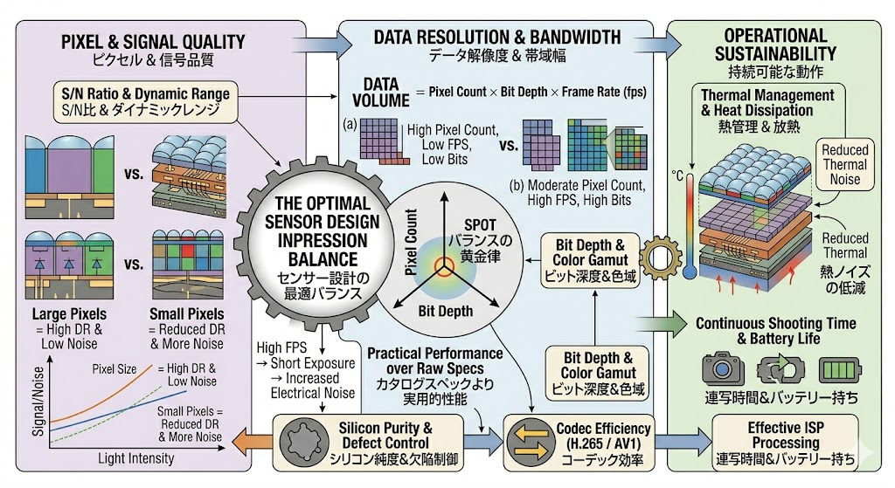
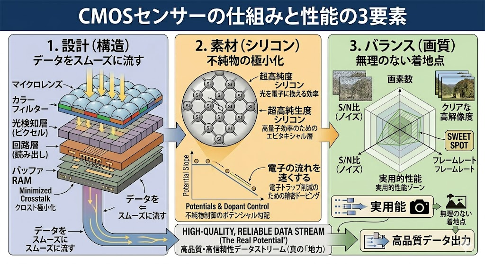
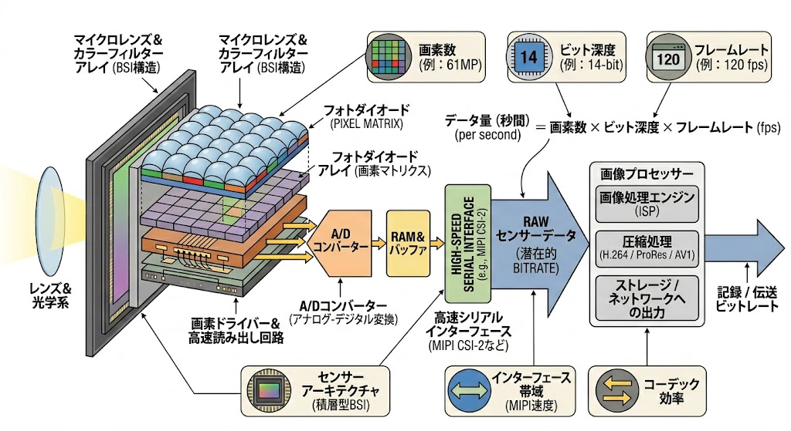
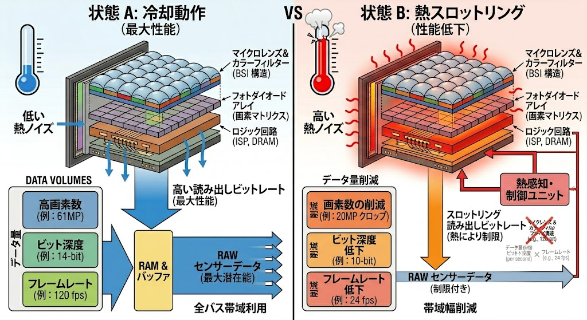

画素の微細化に伴うS/N比の劣化、データ帯域の飽和、持続的な熱課題。これらのトレードオフを「素材純度」と「積層アーキテクチャ」によって最適化する、センサ設計の物理的基盤を詳解します。
現代のCMOSイメージセンサ設計は、3つの競合する物理的要素のバランス（設計の黄金律）の上に成り立っています。高解像度化は1画素あたりの受光量を減少させ、高速化は消費電力と熱雑音を増大させます。
Large Pixels（大型画素）は高いダイナミックレンジと低雑音を実現しますが、解像度が犠牲になります。一方でSmall Pixels（微細画素）は高解像度を可能にする反面、S/N比の確保には高度な光電変換効率の向上が不可欠です。

「高画素×高ビット深度×高フレームレート」の同時実現は、膨大なデータトラフィックを生成します。これは単なる転送の問題に留まらず、センサ内部での熱発生（Thermal Dissipation）を加速させ、持続可能な駆動時間に物理的な制限を課します。
物理的限界を打破するため、最新のセンサ設計は「設計（構造）」「素材（結晶品質）」「バランス（画質）」の3本柱で構成されます。

受光層（Pixel層）の下部にバッファRAMおよびロジック層を積層。これにより、発生した電荷を最短距離でAD変換・処理することが可能となり、読み出し速度とノイズ耐性を同時に向上させています。

センサのポテンシャルを決定付けるのはシリコンウェハーの純度です。結晶欠陥を極限まで排除したエピタキシャル成長層に精密な不純物ドーピングを施すことで、微細な画素内でも電子を取り残さない「ポテンシャルの勾配」を形成し、電荷転送の完全性を担保しています。
理論上の最大スペックと実用的性能には解離があります。特に高負荷連続駆動時における「熱雑音」の抑制が、プロフェッショナル用途における真の性能指標となります。
センサ温度の上昇に伴い、システムは熱損傷を回避するため、フレームレートやビット深度を制限する「熱スロットリング」を発動させます。放熱効率の最適化はこの閾値を押し上げます。

| 解析項目 | 状態A：冷却動作時 | 状態B：熱飽和・制限時 |
|---|---|---|
| ノイズフロア | 極低（理論限界に近い） | 増大（熱雑音による支配） |
| ビット深度 | 最大値（14-bit等） | 制限（10-bit以下） |
| 転送レート | 120fps（フル稼働） | 24fps以下（制限） |